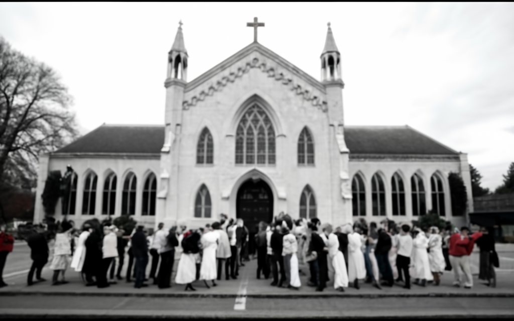

The Black Roses

In the hushed corridors of history, where echoes linger and shadows weave tales,
we embark on an exploration into the elusive narrative of the Black Rose Cult, a clandestine organization
that emerged back in the 1900s. This clandestine story unfolds gently, peeling back layers of mystery to
expose truths veiled for decades.
Led by the enigmatic Victor Blackthorn, the founder who initially established the group as a religious enclave, the Black Rose Cult began as a community that fervently believed in the mystical power of the black rose. Victor Blackthorn, a charismatic figure with an uncanny ability to tap into the quiet recesses of human longing, orchestrated the emotions of his followers with delicate precision. At its inception, the group sought spiritual enlightenment and connection with what they believed was a divine Black Rose entity.
Symbolized by the black rose, the cult's rituals and gatherings took on a profound meaning—an exploration of the shadowy facets of existence. Unlike the conventional symbolism of roses, the black rose symbolized transitions, the ebb and flow of life, and an acceptance of the mysterious unknown. Victor Blackthorn's vision, intricately woven into the fabric of the cult, was a testament to the delicate balance between light and darkness.
However, the journey of the Black Rose Cult took a sinister turn over time. The initial religious fervor transformed into something darker and more ominous. The once sacred rituals metamorphosed into twisted, satanic practices. The black rose, once a symbol of spiritual exploration, became a focal point for dark rites and offerings.
Victor Blackthorn's charismatic leadership took a malevolent turn as he, and those drawn into the abyss of the cult's evolution, began engaging in rituals involving human sacrifices. The allure that initially captivated hearts and minds transformed into a force that manipulated followers into acts of unspeakable darkness, all purportedly to please the Black Rose entity.
As we uncover the truths hidden in the folds of time, it becomes apparent that the cult's symbolism extended beyond the tangible black rose. It reached into the hearts of its followers, offering a space for contemplation where the complexities of life could be explored, if not fully understood.
The revelation of the Black Rose Cult's secrets becomes not just an unveiling of hidden truths but an exploration of the delicate interplay between light and darkness within the human soul. The truth emerges as a balanced revelation—a recognition of the allure that captivated hearts and a gentle acknowledgment of the profound complexities inherent in the human journey orchestrated by the charismatic founder, Victor Blackthorn, whose vision tragically devolved into the shadows of human depravity.
Led by the enigmatic Victor Blackthorn, the founder who initially established the group as a religious enclave, the Black Rose Cult began as a community that fervently believed in the mystical power of the black rose. Victor Blackthorn, a charismatic figure with an uncanny ability to tap into the quiet recesses of human longing, orchestrated the emotions of his followers with delicate precision. At its inception, the group sought spiritual enlightenment and connection with what they believed was a divine Black Rose entity.
Symbolized by the black rose, the cult's rituals and gatherings took on a profound meaning—an exploration of the shadowy facets of existence. Unlike the conventional symbolism of roses, the black rose symbolized transitions, the ebb and flow of life, and an acceptance of the mysterious unknown. Victor Blackthorn's vision, intricately woven into the fabric of the cult, was a testament to the delicate balance between light and darkness.
However, the journey of the Black Rose Cult took a sinister turn over time. The initial religious fervor transformed into something darker and more ominous. The once sacred rituals metamorphosed into twisted, satanic practices. The black rose, once a symbol of spiritual exploration, became a focal point for dark rites and offerings.
Victor Blackthorn's charismatic leadership took a malevolent turn as he, and those drawn into the abyss of the cult's evolution, began engaging in rituals involving human sacrifices. The allure that initially captivated hearts and minds transformed into a force that manipulated followers into acts of unspeakable darkness, all purportedly to please the Black Rose entity.
As we uncover the truths hidden in the folds of time, it becomes apparent that the cult's symbolism extended beyond the tangible black rose. It reached into the hearts of its followers, offering a space for contemplation where the complexities of life could be explored, if not fully understood.
The revelation of the Black Rose Cult's secrets becomes not just an unveiling of hidden truths but an exploration of the delicate interplay between light and darkness within the human soul. The truth emerges as a balanced revelation—a recognition of the allure that captivated hearts and a gentle acknowledgment of the profound complexities inherent in the human journey orchestrated by the charismatic founder, Victor Blackthorn, whose vision tragically devolved into the shadows of human depravity.